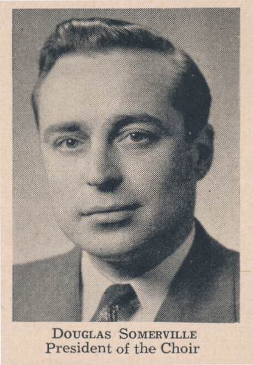
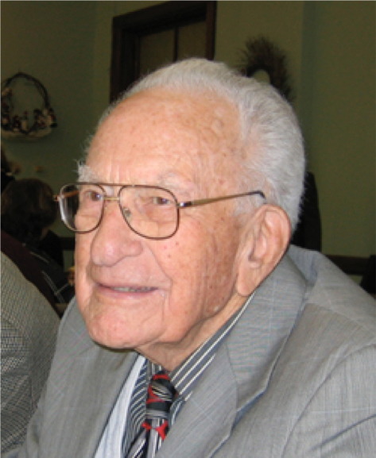

-1-MasterItem.svg)
Stories of Westminster United Church & its People / Page
152
Mayor — and she in turn by Myfanwy Evans. Ed Forrest was the bass soloist
in the 40’s and was succeeded by Paul Fredette late 1951.
An interesting note on these people of the quartet, in the Music Festival our
quartet
won the Shield for church quartets in 1931, 1933, and 1934.
In 1951, On Palm Sunday evening-March 18, Ed Forrest presented the new lyrics
of the “negro spiritual,”
Were You There
, written by minister, Rev. Allan Huband.
May 6th, 1951was the time of dedication of the Memorial Window — King David with his harp
in his dual role of King and Psalmist. The inscription on the window is in
memory of choir members
who, “having faithfully sung His praises here, have passed to the celestial choir
above.” The window
was a gift from the Choir. October 7th was the dedication of the new chancel
(choir loft.)
In 1955, The Men’s Musical Club presented an production of Handle’s
Messiah
in the, then,
new Arena (by Polo Park). The singers were drawn from 60 church choirs across
Winnipeg.
Some of our choir participated in the bloated 600 voice chorus. Art became
Excess
and the Music was secondary. Ok, the writer has a prejudice for small!
An article on the premier performance of Messiah (April 13, 1742).
By 1956 Norma Lewiki replaced Jean Ramsey as soprano
soloist, and Nina Vanderlinden was our alto. Nina had
started her time at Westminster as Nina Biniowski. But
the handsome young man in the bass section, Graham
Vanderlinden, romanced her to marriage. This met with
general approval.
Also, in 1956 Ted Alford was tenor soloist. He had replaced
George Robson (far left) who had held that position since
the late 1940s. Doug Somerville (near left) was our baritone
soloist having replaced Paul Fredette who had left Winnipeg. We looked forward
to Doug’s solos.
They always told a story.
Table
of Contents
Music at Westminster

